| ✅ | ✅ | ✅ | ✅ | ✅ | ✅ |
|---|
Power Functions¶
The ColorDistanceSensor can
send infrared signals to control Power Functions infrared receivers. You can
use this technique to control medium, large, extra large, and train
motors. The infrared range is limited to about 30 cm, depending on the angle
and ambient conditions.

Figure 3 Powered Up
ColorDistanceSensor
(left), Power Functions infrared receiver (middle), and a Power Functions
motor (right). Here, the receiver uses channel
1 with a motor on the red port.¶
- class PFMotor(sensor, channel, color, positive_direction=Direction.CLOCKWISE)
Control Power Functions motors with the infrared functionality of the
ColorDistanceSensor.- Parameters:
sensor (ColorDistanceSensor) – Sensor object.
channel (int) – Channel number of the receiver:
1,2,3, or4.color (Color) – Color marker on the receiver:
Color.BLUEorColor.REDpositive_direction (Direction) – Which direction the motor should turn when you give a positive duty cycle value.

- awaitdc(duty)
Rotates the motor at a given duty cycle (also known as “power”).
- Parameters:
duty (Number, %) – The duty cycle (-100.0 to 100).
- awaitstop()
Stops the motor and lets it spin freely.
The motor gradually stops due to friction.
- awaitbrake()
Passively brakes the motor.
The motor stops due to friction, plus the voltage that is generated while the motor is still moving.
Examples¶
Control a Power Functions motor¶
from pybricks.pupdevices import ColorDistanceSensor, PFMotor
from pybricks.parameters import Port, Color
from pybricks.tools import wait
# Initialize the sensor.
sensor = ColorDistanceSensor(Port.B)
# Initialize a motor on channel 1, on the red output.
motor = PFMotor(sensor, 1, Color.RED)
# Rotate and then stop.
motor.dc(100)
wait(1000)
motor.stop()
wait(1000)
# Rotate the other way at half speed, and then stop.
motor.dc(-50)
wait(1000)
motor.stop()
Controlling multiple Power Functions motors¶
from pybricks.pupdevices import ColorDistanceSensor, PFMotor
from pybricks.parameters import Port, Color, Direction
from pybricks.tools import wait
# Initialize the sensor.
sensor = ColorDistanceSensor(Port.B)
# You can use multiple motors on different channels.
arm = PFMotor(sensor, 1, Color.BLUE)
wheel = PFMotor(sensor, 4, Color.RED, Direction.COUNTERCLOCKWISE)
# Accelerate both motors. Only these values are available.
# Other values will be rounded down to the nearest match.
for duty in [15, 30, 45, 60, 75, 90, 100]:
arm.dc(duty)
wheel.dc(duty)
wait(1000)
# To make the signal more reliable, there is a short
# pause between commands. So, they change speed and
# stop at a slightly different time.
# Brake both motors.
arm.brake()
wheel.brake()